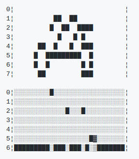

Using LSTM-CTC For Complex Script Recognistion
1 min readMost Indian languages have strong consonant-vowel structure which combine to give syllables. These syllables are written as one continuous ligature and they require complex text rendering (CTL) for type setting.
Writing OCR (Optical Character Recognistion) software for CTL scripts is a challenging task as segmentation is hard. Because of this overall accuracy drops drastically.
A better approach is to use Connectionist Temporal Classification (CTC) which can identify unsegmented sequence directly as it has one-to-one correspondence between input samples and output labels.
Here is a sample input and output of a RNN-CTC network which takes an unsegmented sequence and outputs labels.

Open source OCR software ocorpy uses BLSTM-CTC for text recognistion. Tesseract started using the same in its latest(4.0) version.
I have trained a model to recognize Telugu script using ocropy and the accuracy is ~99% which is far better when compared to OCR softwares without CTC which are accurate to ~70%.